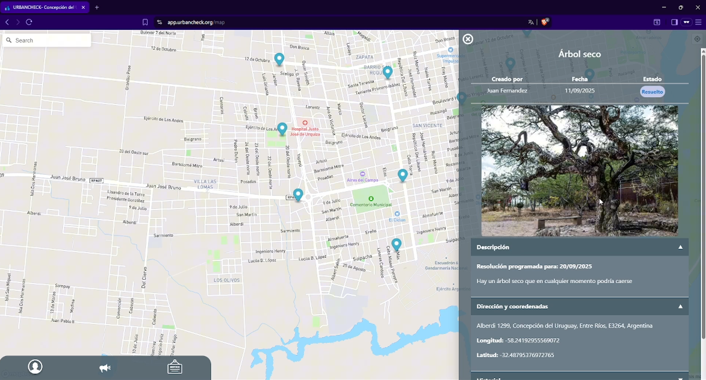

Urbancheck — Sistema de gestión de reclamos urbanos
Proyecto final de carrera que propone modernizar la gestión de reclamos urbanos en la municipalidad de Concepción del Uruguay, mejorando la experiencia de usuario, la trazabilidad y la transparencia, tanto dentro como fuera de la organización.
Tecnologías: HTML, CSS, TypeScript, Angular 16, PostgreSQL, NestJS, GraphQL, Keycloak, Nginx, Docker.
